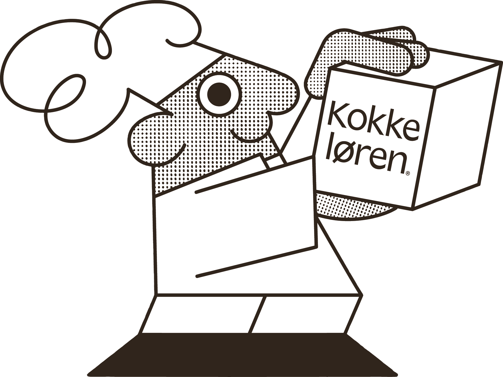
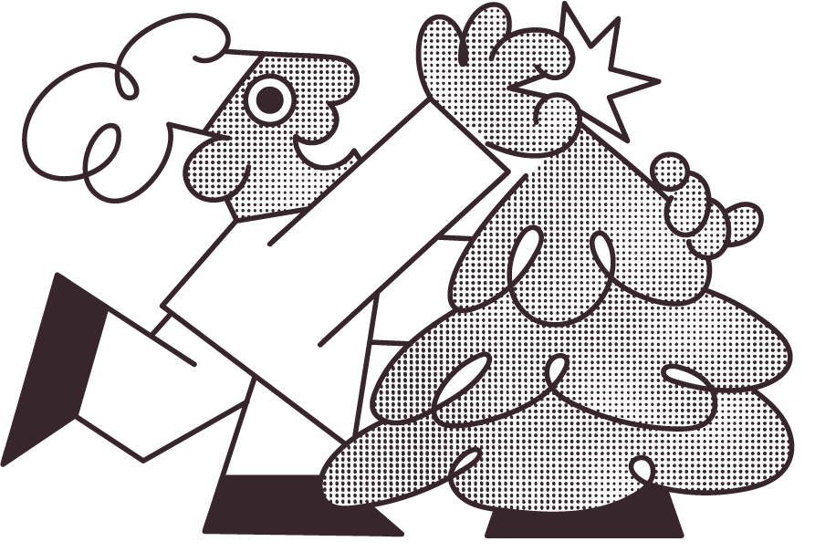

Håndtegnet kokk med halftone-prikket fyll og sort outline. Den er brandets karakter — bruk den sparsomt, men ikke bare nederst. Maskoten funker som sign-off, som karakter i et produkt-bilde, og som solo-figur på en fargeflate.


Bruk i sign-off, gavekort, sesongkampanjer og karakter-bygging. Behold proporsjonene. Plassér sentrert eller venstrestilt.
Ikke roter, skjev eller speil. Ikke bytt ut halftone-fyllet med flat farge. Ikke bruk som primær hero — maskoten er et støtteelement, ikke logo.